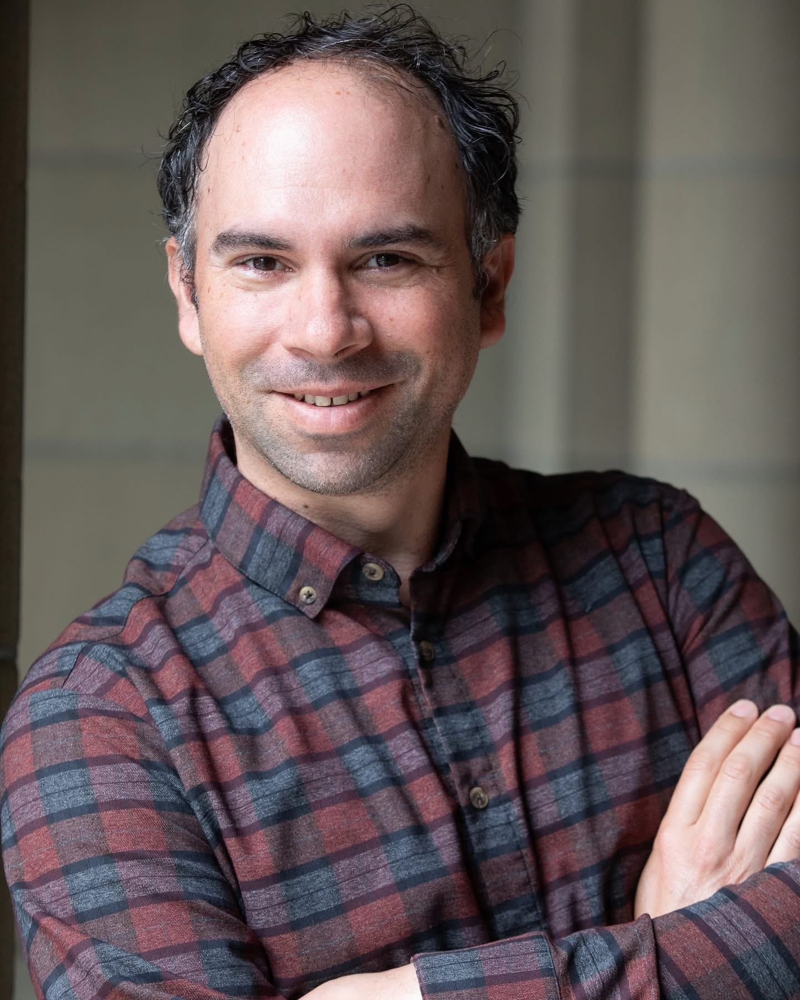
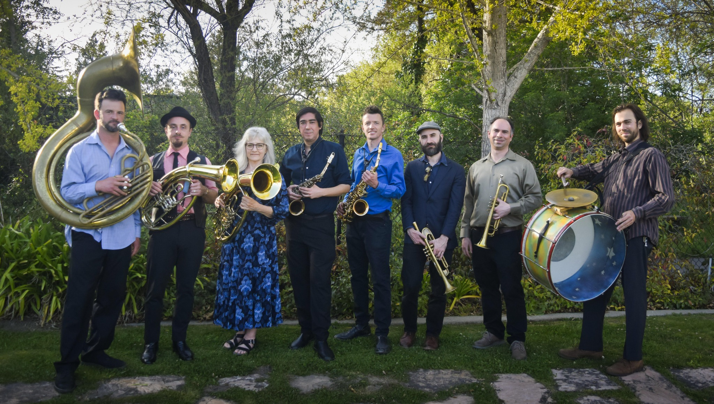
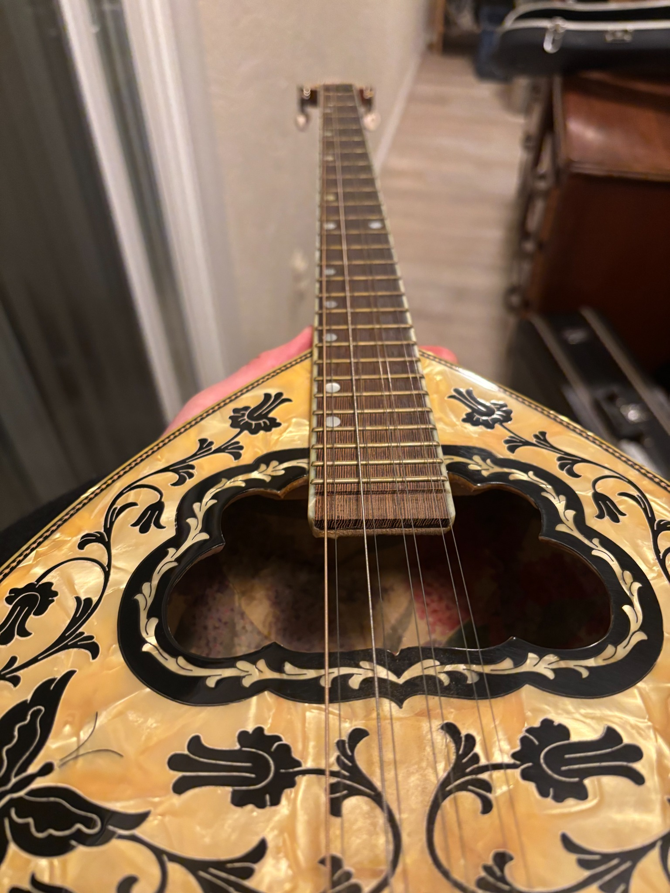

Performance
Musician & Session Work
Guest soloist, ensemble player and session musician for performances, rehearsals and recordings.




Peter works across the stage, studio and community—from trumpet and oud performance to bandleading, education, concert production and live sound.
Available for live performance, sessions, lessons and coaching, event production, audio engineering, livestream support and arts-program consulting.
Guest soloist, ensemble player and session musician for performances, rehearsals and recordings.
Private instruction, ensemble coaching and workshops informed by years of cross-cultural performance.
Booking, artist coordination, venue logistics, stage management, promotion and day-of-event operations.
Live sound and practical technical support for concerts, cultural programs and community events.
Production and technical support for streamed and hybrid programs.
Program development, community arts strategy, documentation, fundraising support and cultural-project planning.
Long-running work in klezmer, Balkan brass, Turkish music and Eastern European folk traditions, shaped by ensembles and collaborations throughout the Bay Area.
Eastern European folk and klezmer ensemble.

Selected Turkish and related repertoire, alongside collaborations including Alaturca Connection.
“Peter and his band not only bring the talent but will go above and beyond… The music was spectacular… I highly recommend this group for any wedding that wants great Klezmer and real professionalism.”
— “Legendary Klezmer Performance at Our Wedding,” GigSalad
Read the full review ↗Concert and festival production is a distinct part of Peter’s work: connecting artists, venues, audiences and community organizations.
Booking, producing, promotion and community-building at the Starry Plough.
Voice of Roma / Herdeljezi: production and performance work, with a production role in 2026.
Work connected with the Jewish Music Festival, JCC East Bay, SF Sephardic Music Festival and EEFC Balkan Music Workshop.
Performance inquiry, session, lesson, production project, audio work or community arts collaboration—send Peter the details.